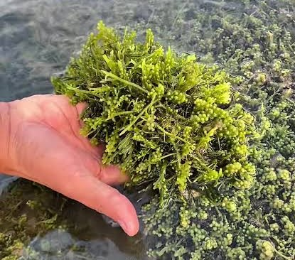
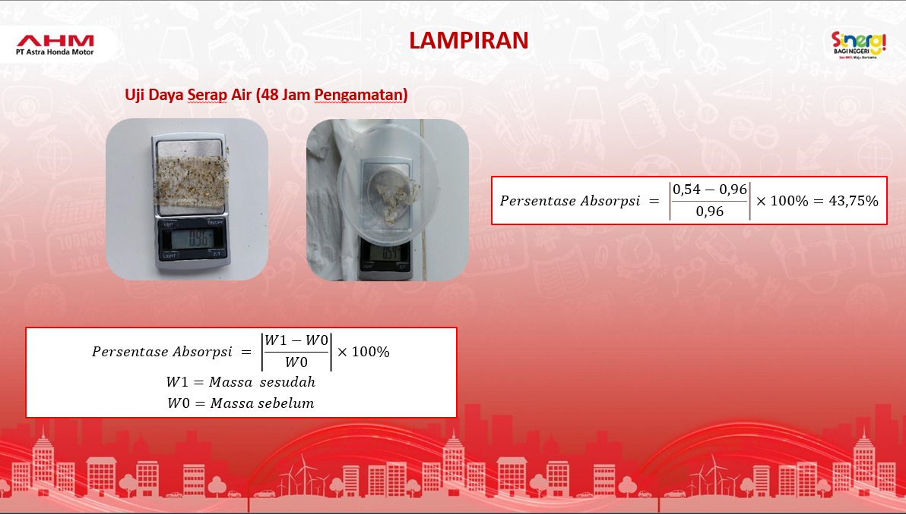
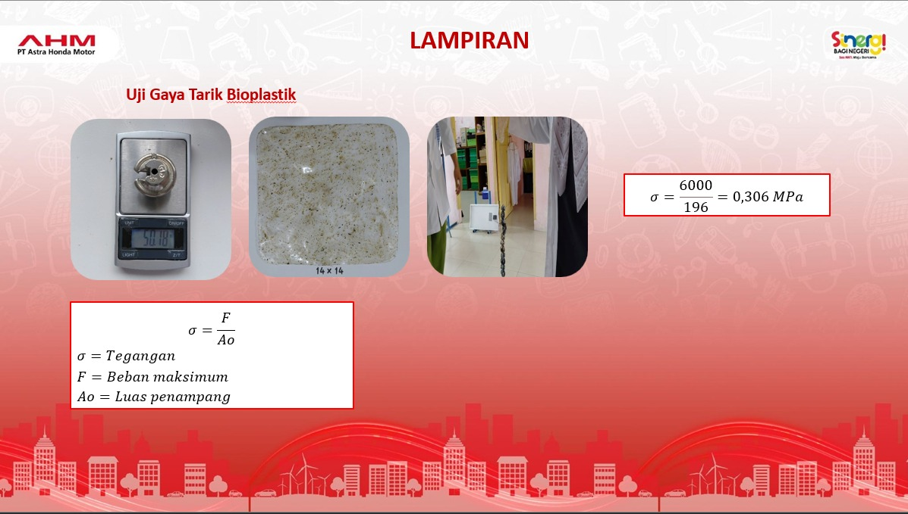

Pemanfaatan Anggur Laut (Caulerpa lentillifera) untuk Bioplastik
Solusi inovatif berbasis variasi gliserol sebagai pemlastis alami untuk menghasilkan material bioplastik ramah lingkungan yang mampu terurai cepat di alam.

🌿 Anggur Laut (Caulerpa lentillifera) Asal Kepulauan Riau
Mengandung matriks polimer organik potensial sebagai kerangka dasar bioplastik.
Variasi rasio gliserol meningkatkan fleksibilitas dan elastisitas lembaran film.
Kandungan amilosa dan amilopektin berfungsi memperkuat struktur kohesi film bioplastik serta membantu proses gelatinisasi.
Hancur secara hayati di tanah tanpa meninggalkan mikroplastik beracun.
Abstrak Penelitian
Ringkasan 4 pilar utama penelitian pemanfaatan biomaterial makroalga tropis untuk mengatasi pencemaran limbah plastik sintetis.
Masalah Plastik Konvensional
Penggunaan plastik konvensional yang tidak ramah lingkungan semakin berpotensi mencemari ekosistem. Diperlukan alternatif bahan organik yang dapat terdegradasi secara alami tanpa merusak tanah dan perairan.
Potensi Bahan Alami & Gliserol
Anggur laut (Caulerpa lentillifera) yang melimpah di Kepulauan Riau (Kab. Karimun) memiliki komposisi polisakarida alami sebagai bahan dasar bioplastik. Penambahan gliserol berfungsi sebagai pemlastis (plasticizer) untuk mereduksi sifat rapuh film.
Metode & Uji Biodegradasi
Penelitian ini menggunakan teknik solution casting (pembuatan film polimer). Uji biodegradasi dievaluasi dengan mengukur dan menganalisis penurunan persentase massa bioplastik secara periodik.
Solusi Ramah Lingkungan
Inovasi bioplastik berbasis anggur laut dan gliserol diharapkan menjadi alternatif solutif pengganti plastik petroleum, membantu menurunkan timbunan sampah melalui material yang cepat terurai secara alami.
Mengapa Anggur Laut?
Indonesia menghadapi krisis timbunan sampah plastik yang mencapai jutaan ton per tahun dan mencemari ekosistem laut. Plastik sintetik berbasis minyak bumi membutuhkan ratusan tahun untuk terurai dan terfragmentasi menjadi mikroplastik berbahaya.
Kelimpahan Sumber Daya Lokal di Karimun
Kabupaten Karimun, Kepulauan Riau, memiliki budidaya dan sebaran liar anggur laut (Caulerpa lentillifera) yang sangat tinggi. Sebagian besar baru dimanfaatkan sebagai lalapan pangan lokal.
Kandungan Polisakarida Alami
Dinding sel makroalga hijau kaya akan polisakarida yang mampu membentuk ikatan rantai polimer saat dilarutkan, menjadikannya bahan matrik biopolimer alami yang ideal.
Peran Krusial Variasi Gliserol & Pati Singkong
Film polisakarida murni bersifat kaku dan mudah retak. Penambahan molekul gliserol dan pati singkong menyusup di antara rantai polimer, menurunkan gaya intermolekul dan memberikan fleksibilitas mekanik yang lentur.
Perbandingan Material
- • Terurai dalam 100 - 500 tahun di alam
- • Beracun bagi ekosistem dan biota laut
- • Bersumber dari bahan bakar fosil tidak terbarukan
- • Terdegradasi alami dalam hitungan hari hingga minggu
- • 100% aman untuk tanah & kompos organik
- • Bersumber dari biomassa laut lokal terbarukan
Tujuan & Target Program
Sasaran terukur yang hendak dicapai melalui formulasi ilmiah dan evaluasi kinerja material bioplastik.
Tujuan Penelitian
- ✓ Menguji potensi polisakarida dari makroalga anggur laut (Caulerpa lentillifera) sebagai matriks biopolimer.
- ✓ Menganalisis pengaruh variasi konsentrasi gliserol terhadap fleksibilitas dan integritas mekanik film bioplastik.
- ✓ Menentukan laju biodegradabilitas bioplastik melalui uji penurunan persentase massa di media tanah secara kuantitatif.
Target Program
- ★ Formulasi Optimal: Terciptanya film bioplastik yang homogen, tidak mudah pecah, dan memiliki ketebalan seragam.
- ★ Biodegradasi Cepat: Mengalami reduksi massa signifikan dalam uji degradasi tanah alami tanpa residu sintetis.
- ★ Aplikasi Nyata: Menjadi purwarupa kemasan ramah lingkungan alternatif untuk barang sekali pakai (*single-use*).
Implementasi & Metodologi Program
Tahapan sistematis pembuatan lembaran bioplastik dengan teknik solution casting dan pengujian biodegradasi.
Preparasi & Ekstraksi
Pembersihan anggur laut segar dari sedimen laut, perendaman, dan ekstraksi komponen polisakarida alami untuk mendapatkan larutan suspensi polimer.
Formulasi Variasi Gliserol
Pencampuran ekstrak dengan gliserol murni pada variasi konsentrasi tertentu untuk menguji tingkat elastisitas dan ketahanan terhadap kerapuhan.
Teknik Solution Casting
Penuangan larutan ke dalam plat cetakan datar secara merata, kemudian dikeringkan dalam kondisi suhu stabil hingga terbentuk lembaran film tipis yang elastis.
Uji Biodegradasi
Pengujian laju degradasi dengan metode soil burial test. Sampel ditimbang berkala untuk menghitung penurunan persentase massa (% degradasi).
Dokumentasi & Galeri Riset
Dokumentasi bahan baku, materi presentasi penelitian, dan visualisasi tahapan karya ilmiah.

Uji Absorpsi selama 2 Hari
Disusun oleh Nabiel Raia Zupharie, Sifa Meylani & Juniati Ramadhani.

Uji Daya Tarik
Krisis plastik, potensi Caulerpa lentillifera, solution casting, dan uji degradasi.
Manfaat Program Inovasi
Kontribusi multidimensi dari riset bioplastik anggur laut terhadap lingkungan, sosial ekonomi masyarakat pesisir, dan pengembangan ilmu pengetahuan.
Aspek Ekologis
Membantu menurunkan akumulasi sampah plastik konvensional. Material organik bioplastik tidak menghasilkan residu zat kimia beracun, aman bagi cacing tanah dan mikroorganisme pengurai.
Aspek Ekonomi Lokal
Memberikan nilai tambah (added value) ekonomi bagi pembudidaya anggur laut di Kabupaten Karimun, membuka potensi industri biomaterial baru berbasis komoditas maritim.
Aspek Edukasi & Sains
Memperkaya khazanah penelitian polimer hijau di Indonesia, membuktikan bahwa makroalga tropis memiliki potensi teknologi tinggi yang mampu dikembangkan lebih lanjut ke skala komersial.
Kesimpulan Penelitian
Anggur laut (Caulerpa lentillifera) terbukti secara efektif memiliki kandungan polisakarida yang dapat diformulasikan menjadi lembaran film bioplastik melalui metode solution casting.
Penambahan gliserol sebagai pemlastis (plasticizer) berhasil mengatasi sifat getas dan rapuh dari polimer alami, menghasilkan film yang lebih lentur dan mudah diaplikasikan.
Uji biodegradasi menunjukkan penurunan massa yang nyata dalam media penguraian alami, menegaskan bahwa bioplastik anggur laut merupakan solusi berkelanjutan yang aman bagi lingkungan dan layak dikembangkan lebih lanjut.